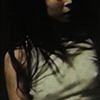

Boy Harsher
Boy Harsher ist eine amerikanisch elektronische Musikgruppe aus Massachusetts. Die band besteht aus der Sängerin Jae Matthews und dem Produzenten Augustus Muller. Durch ihren Underground-Song „Pain“ gelangte den beiden der Durchbruch. Matthews und Muller gehört das Labell Nude Club, welches sie zusammen führen und bei welchem sie andere Künstler aus ihrem Genre unter vertrag haben. Agustus Muller und Jae Matthews treffen sich an einer Filmschule in Savannah, Gerogia. Die beiden finden zueinander, auf künstlerischer und immer mal wieder auch auf persönlicher Ebene. Jae feiert Agustus klare Produktionen, während Gus von Jaes Texten begeistert ist und unbedingt mit ihr zusammenarbeiten will.
Sie starten 2013 als Teen Dreamz. Gus baut aufgenommene Gedichtlesungen von Jae in seine Beats ein. Die Harmonie stimmt und die beiden wollen mehr, weswegen sie ein Jahr später Boy Harsher gründen. Mit ihrem filmischen Hintergrund bauen die beiden breite Geschichten, die sich im Kopf zu einem wilden, emotional aufwühlenden Trip entwickeln. 2015 entscheiden sich die beiden, in Agustus Heimat Northhampton umzuziehen. Gemeinsam mit Jae, die ursprünglich aus Utica, New York kommt, erkundet Gus erstmals die Musikszene in Massachusetts. Ihr erstes Album "Yr Body Is Nothing" erscheint 2016 über DKA. Die beiden kommen mit der Label-Vertragswelt allerdings nicht so klar und gründen kurz darauf ihr eigenes Label Nude Club Records, über welches sie fortan veröffentlichen. Neben mehreren EPs erscheint 2019 auch "Careful" in Eigenregie. Ihr Zweitling beschäftigt sich vor allem mit persönlichen Beziehungen und Gefühlen: Nachdem Jae ihren Vater bereits im Teenageralter verlor, erkrankte ihre alkoholabhängige Mutter 2017 an Demenz.
Während Gus in seiner Jugend vor allem durch die Musik in Skatevideos, Andrew Reynolds und DJ Shadows "Organ Donor" beieinflusst wurde, sieht Jae ihre Einflüsse vor allem in "The Glow Pt. 2" von den Microphones. Vom Metal Magazine nach ihren kühnsten Kollabo-Träumen gefragt, schmeißen die beiden eine ganze Reihe unterschiedlichster Künstler in den Raum: Essaie Pas, Schwefelgelb, Jenny Hval oder Anna von Hausswolff.
Bandmembers:
Cover
Titel
Released

Lesser Man EP
October 1, 2014

Yr Body is Nothing
Juni 20, 2016
Pain II
Mai 11, 2018
Careful
Februar 1, 2019